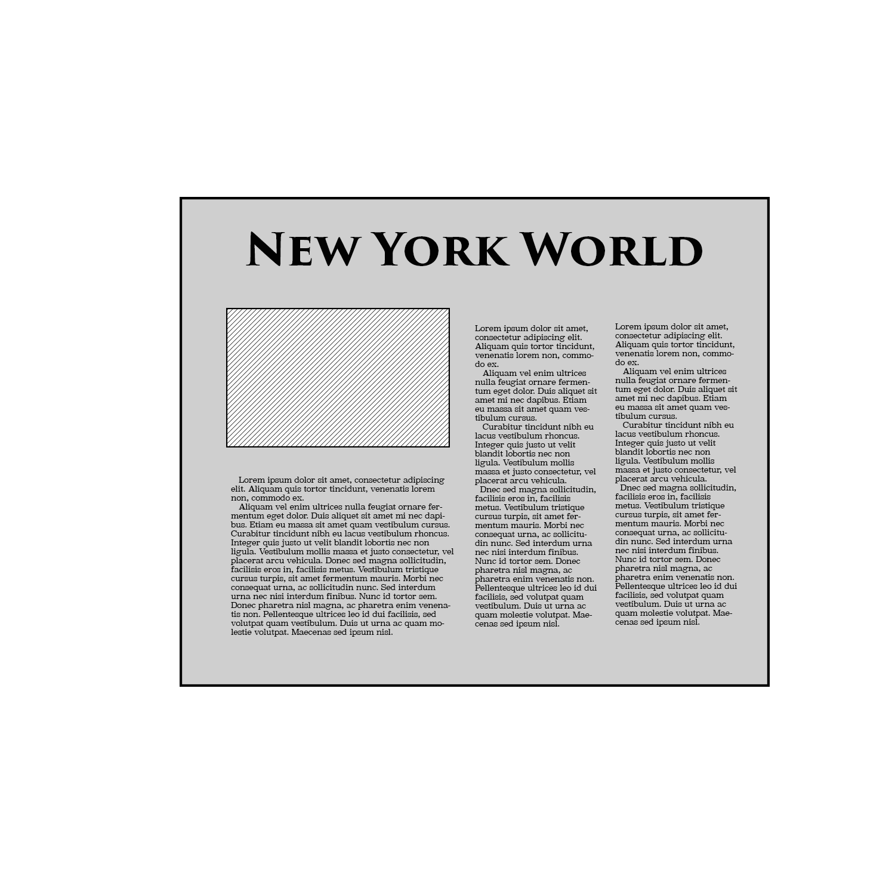
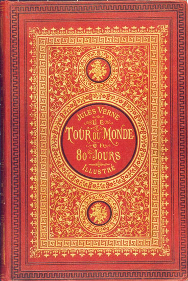
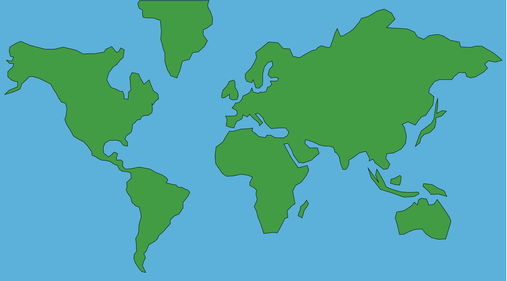
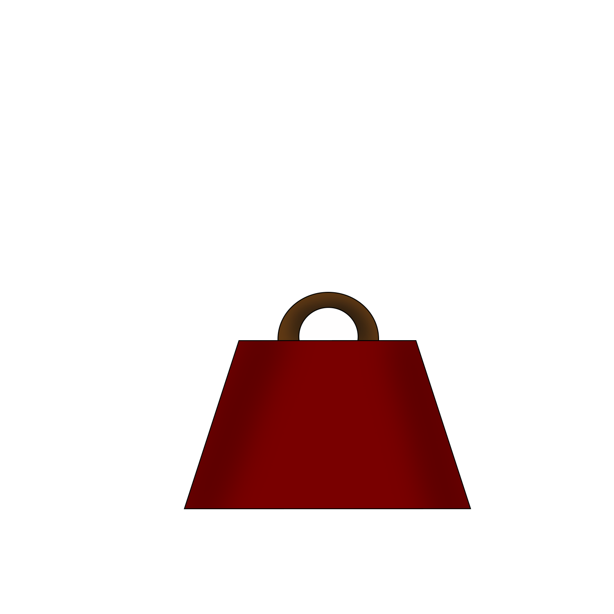

Nellie Bly was an American journalist known for investigative reporting.
She is famed for her undercover reporting of the conditions in asylums, particularly at Blackwell's Island in New York City, in 1887.
Though she was an established writer at New York World, by 1888, Bly was ready for another adventure.


Inspired by Jules Verne’s “Around the World in Eighty Days,”
Bly proposed to her editor at New York World that she write a series of articles while traversing the world -- in less than 80 days.
As journalism was a male-dominated field, Bly’s editor and the other men delayed her for a year
until she threatened to travel and write for another newspaper.

On November 14, 1889, Bly set sail from Hoboken Pier to begin her journey.
Bly arrived back in New York 72 days and 6 hours after leaving Hoboken.

Bly carried only one bag. Into it she squeezed...
two traveling caps
a pair of slippers
toilet articles
an ink stand, pens, pencils, and paper
a dress, a blazar, and a few changes of underwear
and a jar of cold cream.
Many suggested she take along a revolver, but she left it behind.